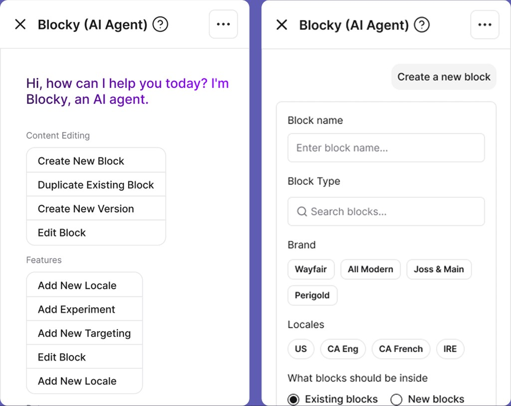
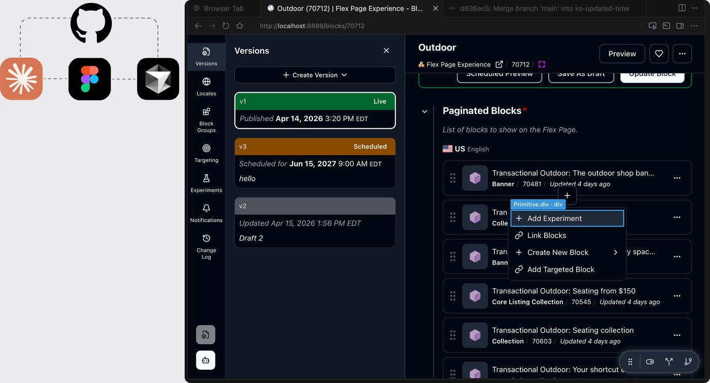
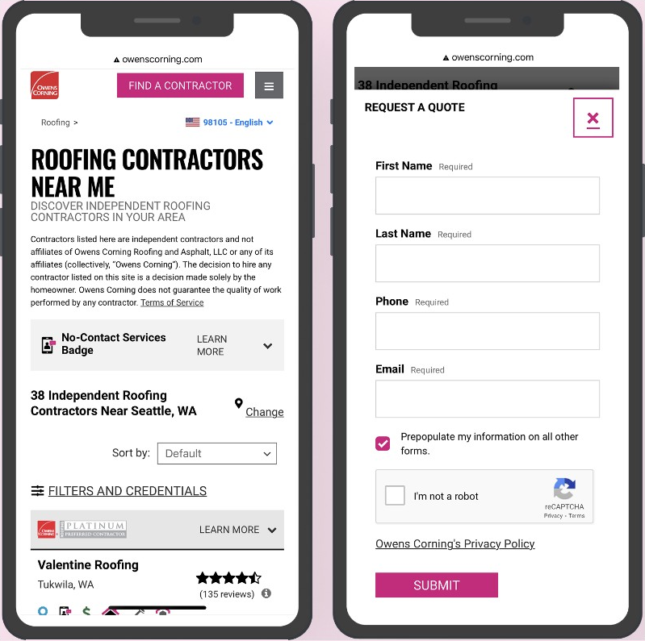

I'm Katherine, a product designer bringing clarity and strategy to complex platforms.
Wayfair Core Platform Redesign
Redefined the platform's information architecture and core workflows by introducing a new 3-panel design.

Wayfair's Internal AI Agent
Led the redesign of Wayfair's internal AI agent, transforming a free-form chatbot into a guided experience that helps users discover capabilities and complete tasks more effectively.
Wayfair Internal Template System
Launched a reusable template system that reduced page creation time by 63% and helped teams scale high-traffic page launches.

Google Maps for Gen Z
Designed new features to help Gen Z users discover outdoor groups and connect with like-minded communities.
Figma Plugin - Easy Spotlight
Built and launched a Figma plugin using Cursor to help designers highlight key areas for clearer communication and faster reviews.

Designing and Shipping with AI
Used AI tools to translate designs into production-ready code, enabling faster iteration and lightweight UI updates with minimal engineering dependency.

Wayfair Design System Rebuild
Rebuilt the internal design system with modern UI foundations, reusable components, and standardized interaction patterns to improve consistency and reduce design debt.
Favorites for Faster Block Access
Introduced a favorites feature that lets users quickly return to frequently used blocks and reduce time spent searching.

Rapid Quote Flow for Homeowners
Streamlined the mobile web quote flow to help homeowners request quotes faster, reducing wait time from 2 weeks to 3 minutes.

Non-Profit Visual System
Built a psychology-driven visual system for a gardening community platform.